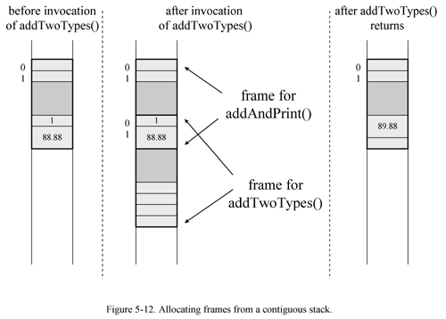

Any use of this Beta Book is subject to the rules stated in the Terms of Use.
| © 1997 The McGraw-Hill Companies, Inc. All rights reserved. Any use of this Beta Book is subject to the rules stated in the Terms of Use. | |
The previous four chapters of this book gave a broad overview of Javaís architecture. They showed how the Java Virtual Machine fits into the overall architecture relative to other components such as the language and API. The remainder of this book will focus more narrowly on the Java Virtual Machine. This chapter gives an overview of the Java Virtual Machineís internal architecture.
The Java Virtual Machine is called "virtual" because it is an abstract computer defined by a specification. To run a Java program, you need a concrete implementation of the abstract specification. This chapter describes primarily the abstract specification of the Java Virtual Machine. To illustrate the abstract definition of certain features, however, this chapter also discusses various ways in which those features could be implemented.
What is a Java Virtual Machine?
To understand the Java Virtual Machine you must first be aware that you may be talking about any of three different things when you say "Java Virtual Machine." You may be speaking of:
The abstract specification is a concept, described in detail in the book: The Java Virtual Machine Specification, by Tim Lindholm and Frank Yellin. Concrete implementations, which exist on many platforms and come from many vendors, are either all software or a combination of hardware and software. A runtime instance hosts a single running Java application.
Each Java application runs inside a runtime instance of some concrete implementation of the abstract specification of the Java Virtual Machine. In this book, the term "Java Virtual Machine" is used in all three of these senses. Where the intended sense is not clear from the context, one of the terms "specification," "implementation," or "instance" is added to the term "Java Virtual Machine".
The Lifetime of a Java Virtual Machine
A runtime instance of the Java Virtual Machine has a clear mission in life: to run one Java application. When a Java application starts, a runtime instance is born. When the application completes, the instance dies. If you start three Java applications at the same time, on the same computer, using the same concrete implementation, youíll get three Java Virtual Machine instances. Each Java application runs inside its own Java Virtual Machine.
A Java Virtual Machine instance starts running its solitary application by invoking the main() method of some initial class. The main() method must be public, static, return void, and accept one parameter: a String array. Any class with such a main() method can be used as the starting point for a Java application.
For example, consider an application that prints out its command line arguments:
begin
// On CD-ROM in file jvm/ex1/Echo.javaclass Echo {
public static void main(String[] args) {
int len = args.length;
for (int i = 0; i < len; ++i) {
System.out.print(args[i] + " ");
}
System.out.println();
}
}
end
You must in some implementation-dependent way give a Java Virtual Machine the name of the initial class that has the main() method that will start the entire application. One real world example of a Java Virtual Machine implementation is the java program from Sunís JDK. If you wanted to run the Echo application using Sunís java on Window95, for example, you would type in a command such as:
insert
java Echo Greetings, Planet.
end
The first word in the command, "java," indicates that the Java Virtual Machine from Sunís JDK should be run by the operating system. The second word, "Echo," is the name of the initial class. Echo must have a public static method named main() that returns void and takes a String array as its only parameter. The subsequent words, "Greetings, Planet.," are the command line arguments for the application. These are passed to the main() method in the String array in the order in which they appear on the command line. So, for the above example, the contents of the String array passed to main in Echo are:
arg[0] is "Greetings,"
arg[1] is "Planet."
The main() method of an applicationís initial class serves as the starting point for that applicationís initial thread. The initial thread can in turn fire off other threads.
Inside the Java Virtual Machine, threads come in two flavors: daemon and non-daemon. A daemon thread is ordinarily a thread used by the virtual machine itself, such as a thread that performs garbage collection. The application, however, can mark any threads it creates as daemon threads. The initial thread of an application--the one that begins at main()--is a non-daemon thread.
A Java application continues to execute (the virtual machine instance continues to live) as long as any non-daemon threads are still running. When all non-daemon threads of a Java application terminate, the virtual machine instance will exit. If permitted by the security manager, the application can also cause its own demise by invoking the exit() method of class Runtime or System.
In the Echo application above, the main() method doesnít invoke any other threads. After it prints out the command line arguments, main() returns. This terminates the applicationís only non-daemon thread, which causes the virtual machine instance to exit.
The Architecture of the Java Virtual Machine
In the Java Virtual Machine specification, the behavior of a virtual machine instance is described in terms of subsystems, memory areas, data types, and instructions. These components describe an abstract inner architecture for the abstract Java Virtual Machine. The purpose of these components is not so much to dictate an inner architecture for implementations. It is more to provide a way to strictly define the external behavior of implementations. The specification defines the required behavior of any Java Virtual Machine implementation in terms of these abstract components and their interactions.
Figure 5-1 shows a block diagram of the Java Virtual Machine that includes the major subsystems and memory areas described in the specification. As mentioned in previous chapters, each Java Virtual Machine has a class loader subsystem: a mechanism for loading types (classes and interfaces) given fully qualified names. Each Java Virtual Machine also has an execution engine: a mechanism responsible for executing the instructions contained in the methods of loaded classes.
When a Java Virtual Machine runs a program, it needs memory to store many things, including bytecodes and other information it extracts from loaded class files, objects the program instantiates, parameters to methods, return values, local variables, and intermediate results of computations. The Java Virtual Machine organizes the memory it needs to execute a program into several runtime data areas.
Although the same runtime data areas exist in some form in every Java Virtual Machine implementation, their specification is quite abstract. Many decisions about the structural details of the runtime data areas are left to the designers of individual implementations.
Different implementations of the virtual machine can have very different memory constraints. Some implementations may have a lot of memory in which to work, others may have very little. Some implementations may be able to take advantage of virtual memory, others may not. The abstract nature of the specification of the runtime data areas helps make it easier to implement the Java Virtual Machine on a wide variety of computers and devices.
Some runtime data areas are shared among all of an applicationís threads and others are unique to individual threads. Each instance of the Java Virtual Machine has one method area and one heap. These areas are shared by all threads running inside the virtual machine. When the virtual machine loads a class file, it parses information about a type from the binary data contained in the class file. It places this type information into the method area. As the program runs, the virtual machine places all objects the program instantiates onto the heap. See Figure 5-2 for a graphical depiction of these memory areas.
As each new thread comes into existence, it gets its own pc register (program counter) and Java stack. If the thread is executing a Java method (not a native method), the value of the pc register indicates the next instruction to execute. A threadís Java stack stores the state of Java (not native) method invocations for the thread. The state of a Java method invocation includes its local variables, the parameters with which it was invoked, its return value (if any), and intermediate calculations. The state of native method invocations is stored in an implementation-dependent way in native method stacks, as well as possibly in registers or other implementation-dependent memory areas.
The Java stack is composed of stack frames (or frames). A stack frame contains the state of one Java method invocation. When a thread invokes a method, the Java Virtual Machine pushes a new frame onto that threadís Java stack. When the method completes, the virtual machine pops and discards the frame for that method.
The Java Virtual Machine has no registers to hold intermediate data values. The instruction set uses the Java stack for storage of intermediate data values. This approach was taken by Javaís designers to keep the Java Virtual Machine's instruction set compact and to facilitate implementation on architectures with few or irregular general purpose registers.
See Figure 5-3 for a graphical depiction of the memory areas the Java Virtual Machine creates for each thread. These areas are private to the owning thread. No thread can access the pc register or Java stack of another thread.

Figure 5-3 shows a snapshot of a virtual machine instance in which three threads are executing. At the instant of the snapshot, threads one and two are executing Java methods. Thread three is executing a native method.
In Figure 5-3, as in all graphical depictions of the Java stack in this book, the stacks are shown growing downwards. The "top" of each stack is shown at the bottom of the figure. Stack frames for currently executing methods are shown in a lighter shade. For threads that are currently executing a Java method, the pc register indicates the next instruction to execute. In Figure 5-3, such pc registers (the ones for threads one and two) are shown in a lighter shade. Because thread three is currently executing a native method, the contents of its pc register--the one shown in dark gray--is undefined.
Data Types
The Java Virtual Machine computes by performing operations on certain types of data. Both the data types and operations are strictly defined by the Java Virtual Machine specification. The data types can be divided into a set of primitive types and a reference type. Variables of the primitive types hold primitive values, and variables of the reference type hold reference values. Reference values refer to objects, but are not objects themselves. Primitive values, by contrast, do not refer to anything. They are the actual data themselves. You can see a graphical depiction of the Java Virtual Machineís families of data types in Figure 5-4.
All the primitive types of the Java programming language, except boolean, are primitive types of the Java Virtual Machine. When a compiler translates Java source code into bytecodes, it uses ints or bytes to represent booleans. In the Java Virtual Machine, false is represented by integer zero and true by any non-zero integer. Operations involving boolean values use ints. Arrays of boolean are accessed as arrays of byte, though they may be represented on the heap as arrays of byte or as bit fields.
The primitive types of the Java programming language other than boolean form the numeric types of the Java Virtual Machine. The numeric types are divided between the integral types: byte, short, int, long, and char, and the floating-point types: float and double. As with the Java programming language, the primitive types of the Java Virtual Machine have the same range everywhere. A long in the Java Virtual Machine always acts like a 64-bit signed twos complement number, independent of the underlying host platform.
The Java Virtual Machine works with one other primitive type that is unavailable to the Java programmer: the returnValue type. This primitive type is used to implement finally clauses of Java programs. The use of the returnValue type is described in detail in Chapter 18, "Finally Clauses."
The reference type of the Java Virtual Machine is cleverly named reference. Values of type reference come in three flavors: the class type, the interface type, and the array type. All three types have values that are references to dynamically created objects. The class typeís values are references to class instances. The array typeís values are references to arrays, which are full-fledged objects in the Java Virtual Machine. The interface typeís values are references to class instances that implement an interface. One other reference value is the null value, which indicates the reference variable doesnít refer to any object.
The Java Virtual Machine specification defines the range of values for each of the data types, but does not define their sizes. The number of bits used to store each data type value is a decision of the designers of individual implementations. The ranges of the Java Virtual Machines data typeís are shown in Table 5-1. More information on the floating point ranges is given in Chapter 14, "Floating Point Arithmetic."
Table 5-1. Ranges of the Java Virtual Machineís data types
| Type | Range |
| byte | 8-bit signed two's complement integer (-27 to 27 - 1, inclusive) |
| short | 16-bit signed two's complement integer (-215 to 215 - 1, inclusive) |
| int | 32-bit signed two's complement integer (-231 to 231 - 1, inclusive) |
| long | 64-bit signed two's complement integer (-263 to 263 - 1, inclusive) |
| char | 16-bit unsigned Unicode character (0 to 216 - 1, inclusive) |
| float | 32-bit IEEE 754 single-precision float |
| double | 64-bit IEEE 754 double-precision float |
| returnValue | address of an opcode within the same method |
| reference | reference to an object on the heap, or null |
Word Size
The basic unit of size for data values in the Java Virtual Machine is the word--a fixed size chosen by the designer of each Java Virtual Machine implementation. The word size must be large enough to hold a value of type byte, short, int, char, float, returnValue, or reference. Two words must be large enough to hold a value of type long or double. An implementation designer must therefore choose a word size that is at least 32 bits, but otherwise can pick whatever word size will yield the most efficient implementation. The word size is often chosen to be the size of a native pointer on the host platform.
The specification of many of the Java Virtual Machineís runtime data areas are based upon this abstract concept of a word. For example, two sections of a Java stack frame--the local variables and operand stack--are defined in terms of words. These areas can contain values of any of the virtual machineís data types. When placed into the local variables or operand stack, a value occupies either one or two words.
As they run, Java programs cannot determine the word size of their host virtual machine implementation. The word size does not affect the behavior of a program. It is only an internal attribute of a virtual machine implementation.
The Class Loader Subsystem
The part of a Java Virtual Machine implementation that takes care of finding and loading types is the class loader subsystem. Chapter 1, "Introduction to Javaís Architecture," gives an overview of this subsystem. Chapter 3, "Security," shows how the subsystem fits into Javaís security model. This chapter describes the class loader subsystem in more detail and show how it relates to the other components of the virtual machineís internal architecture.
As mentioned in Chapter 1, the Java Virtual Machine contains two kinds of class loaders: a primordial class loader and class loader objects. The primordial class loader is a part of the virtual machine implementation, and class loader objects are part of the running Java application. Classes loaded by different class loaders are placed into separate name spaces inside the Java Virtual Machine.
The class loader subsystem involves many other parts of the Java Virtual Machine and several classes from the java.lang library. For example, class loader objects are regular Java objects whose class descends from java.lang.ClassLoader. The methods of class ClassLoader allow Java applications to access the virtual machineís class loading machinery. Also, for every type a Java Virtual Machine loads, it creates an instance of class java.lang.Class to represent that type. Like all objects, class loader objects and instances of class Class reside on the heap. Data for loaded types resides in the method area.
Loading, Linking and Initialization
The class loader subsystem is responsible for more than just locating and importing the binary data for classes. It must also verify the correctness of imported classes, allocate and initialize memory for class variables, and assist in the resolution of symbolic references. These activities are performed in a strict order:
The details of these processes are given Chapter 7, "The Lifetime of a Class."
The Primordial Class Loader
Java Virtual Machine implementations must be able to recognize and load classes and interfaces stored in binary files that conform to the Java class file format. An implementation is free to recognize other binary forms besides class files, but it must recognize class files. One example of an alternative binary format recognized by a particular Java Virtual Machine implementation is the CAB file. This file format, which is an archive of class files and other data files, is defined by Microsoft and recognized by their implementation of the Java Virtual Machine.
Every Java Virtual Machine implementation has a primordial class loader, which knows how to load trusted classes, including the classes of the Java API. The Java Virtual Machine specification doesnít define how the primordial loader should locate classes. That is another decision the specification leaves to implementation designers.
Given a fully qualified type name, the primordial class loader must in some way attempt to locate a file with the typeís simple name plus ".class". One common approach is demonstrated by the Java Virtual Machine implementation in Sunís 1.1 JDK on Windows95. This implementation searches a user-defined directory path stored in an environment variable named CLASSPATH. The primordial loader looks in each directory, in the order the directories appear in the CLASSPATH, until it finds a file with the appropriate name: the typeís simple name plus ".class". Unless the type is part of the unnamed package, the primordial loader expects the file to be in a subdirectory of one the directories in the CLASSPATH. The path name of the subdirectory is built from the package name of the type. For example, if the primordial class loader is searching for class java.lang.Object, it will look for Object.class in the java\lang subdirectory of each CLASSPATH directory.
Class Loader Objects
Although class loader objects themselves are part of the Java application, three of the methods in class ClassLoader are gateways into the Java Virtual Machine:
begin
// Three of the methods declared in class java.lang.ClassLoader:
protected final Class defineClass(byte data[], int offset,
int length);
protected final Class findSystemClass(String name);
protected final void resolveClass(Class c);
end
Any Java Virtual Machine implementation must take care to connect these methods of class ClassLoader to the internal class loader subsystem.
The defineClass() method accepts a byte array, data[], as input. Starting at position offset in the array and continuing for length bytes, class ClassLoader expects binary data conforming to the Java class file format--binary data that represents a new type for the running application. Every Java Virtual Machine implementation must make sure the defineClass() method of class ClassLoader can cause a new type to be imported into the method area.
The findSystemClass() method accepts a String representing a fully qualified name of a type. When a class loader object invokes this method, it is requesting that the virtual machine attempt to load the named type via its primordial class loader. If the primordial class loader has already loaded or successfully loads the type, it returns a reference to the Class object representing the type. If it canít locate the binary data for the type, it throws ClassNotFoundException. Every Java Virtual Machine implementation must make sure the findSystemClass() method can invoke the primordial class loader in this way.
The resolveClass() method accepts a reference to a Class instance. This method causes the type represented by the Class instance to be linked and initialized (if it hasnít already been linked and initialized). The defineClass() method, described above, only takes care of loading. (See the above section, "Loading, Linking, and Initialization" for definitions of these terms.) When defineClass() returns a Class instance, the binary file for the type has definitely been located and imported into the method area, but not necessarily linked and initialized. Java Virtual Machine implementations make sure the resolveClass() method of class ClassLoader can cause the class loader subsystem to perform linking and initialization.
The details of how a Java Virtual Machine performs class loading, linking, and initialization, with class loader objects is given in Chapter 8, "The Linking Model."
Name Spaces
As mentioned in Chapter 3, "Security," each class loader maintains its own name space populated by the types it has loaded. Because each class loader has its own name space, a single Java application can load multiple types with the same fully qualified name. A typeís fully qualified name, therefore, is not always enough to uniquely identify it inside a Java Virtual Machine instance. If multiple types of that same name have been loaded into different name spaces, the identity of the class loader that loaded the type (the identity of the name space it is in) will also be needed to uniquely identify that type.
Name spaces arise inside a Java Virtual Machine instance as a result of the process of resolution. As part of the data for each loaded type, the Java Virtual Machine keeps track of the class loader that imported the type. When the virtual machine needs to resolve a symbolic reference from one class to another, it requests the referenced class from the same class loader that loaded the referencing class. This process is described in detail in Chapter 8, "The Linking Model."
The Method Area
Inside a Java Virtual Machine instance, information about loaded types is stored in a logical area of memory called the method area. When the Java Virtual Machine loads a type, it uses a class loader to locate the appropriate class file. The class loader reads in the class file--a linear stream of binary data--and passes it to the virtual machine. The virtual machine extracts information about the type from the binary data and stores the information in the method area. Memory for class (static) variables declared in the class is also taken from the method area.
The manner in which a Java Virtual Machine implementation represents type information internally is a decision of the implementation designer. For example, multi-byte quantities in class files are stored in big-endian (most significant byte first) order. When the data is imported into the method area, however, a virtual machine can store the data in any manner. If an implementation sits on top of a little-endian processor, the designers may decide to store multi-byte values in the method area in little-endian order.
The virtual machine will search through and use the type information stored in the method area as it executes the application it is hosting. Designers must attempt to devise data structures that will facilitate speedy execution of the Java application, but must also think of compactness. If designing an implementation that will operate under low memory constraints, designers may decide to trade off some execution speed in favor of compactness. If designing an implementation that will run on a virtual memory system, on the other hand, designers may decide to store redundant information in the method area to facilitate execution speed. (If the underlying host doesnít offer virtual memory, but does offer a hard disk, designers could create their own virtual memory system as part of their implementation.) Designers can choose whatever data structures and organization they feel optimize their implementations performance, in the context of its requirements.
All threads share the same method area, so access to the method areaís data structures must be designed to be thread-safe. If two threads are attempting to find a class named Lava, for example, and Lava has not yet been loaded, only one thread should be allowed to load it while the other one waits.
The size of the method area need not be fixed. As the Java application runs, the virtual machine can expand and contract the method area to fit the applicationís needs. Also, the memory of the method area need not be contiguous. It could be allocated on a heap--even on the virtual machineís own heap. Implementations may allow users or programmers to specify an initial size for the method area, as well as a maximum or minimum size.
The method area can also be garbage collected. Because Java programs can be dynamically extended via class loader objects, classes can become "unreferenced" by the application. If a class becomes unreferenced, a Java Virtual Machine can unload the class (garbage collect it) to keep the memory occupied by the method area at a minimum. The unloading of classes--including the conditions under which a class can become "unreferenced"--is described in Chapter 7, "The Lifetime of a Class."
Type Information
For each type it loads, a Java Virtual Machine must store the following kinds of information in the method area:
Inside the Java class file and Java Virtual Machine, type names are always stored as fully qualified names. In Java source code, a fully qualified name is the name of a typeís package, plus a dot, plus the typeís simple name. For example, the fully qualified name of class Object in package java.lang is java.lang.Object. In class files, the dots are replaced by slashes, as in java/lang/Object. In the method area, fully qualified names can be represented in whatever form and data structures a designer chooses.
In addition to the basic type information listed above, the virtual machine must also store for each loaded type:
This data is described in the following sections.
The Constant Pool
For each type it loads, a Java Virtual Machine must store a constant pool. A constant pool is an ordered set of constants used by the type, including literals (string, integer, and floating point constants) and symbolic references to types, fields, and methods. Entries in the constant pool are referenced by index, much like the elements of an array. Because it holds symbolic references to all types, fields, and methods used by a type, the constant pool plays a central role in the dynamic linking of Java programs. The constant pool is described in more detail later in this chapter and in Chapter 6, "The Java Class File."
Field Information
For each field declared in the type, the following information must be stored in the method area. In addition to the information for each field, the order in which the fields are declared by the class or interface must also be recorded. Hereís the list for fields:
Method Information
For each method declared in the type, the following information must be stored in the method area. As with fields, the order in which the methods are declared by the class or interface must be recorded as well as the data. Hereís the list:
In addition to the items listed above, the following information must also be stored with each method that is not abstract or native:
Class Variables
Class variables are shared among all instances of a class and can be accessed even in the absence of any instance. These variables are associated with the class--not with instances of the class--so they are logically part of the class data in the method area. Before a Java Virtual Machine uses a class, it must allocate memory from the method area for each non-final class variable declared in the class.
Constants (class variables declared final) are not treated in the same way as non-final class variables. Every type that uses a final class variable gets a copy of the constant value in its own constant pool. As part of the constant pool, final class variables are stored in the method area--just like non-final class variables. But whereas non-final class variables are stored as part of the data for the type that declares them, final class variables are stored as part of the data for any type that uses them. This special treatment of constants is explained in more detail in Chapter 6, "The Java Class File."
A Reference to Class ClassLoader
For each type it loads, a Java Virtual Machine must keep track of whether or not the type was loaded via the primordial class loader or a class loader object. For those types loaded via a class loader object, the virtual machine must store a reference to the class loader object that loaded the type. This information is stored as part of the typeís data in the method area.
The virtual machine uses this information during dynamic linking. When one type refers to another type, the virtual machine requests the referenced type from the same class loader that loaded the referencing type. This process of dynamic linking is also central to the way the virtual machine forms separate name spaces. To be able to properly perform dynamic linking and maintain multiple name spaces, the virtual machine needs to know what class loader loaded each type in its method area. The details of dynamic linking and name spaces are given in Chapter 8, "The Linking Model."
A Reference to Class Class
An instance of class java.lang.Class is created by the Java Virtual Machine for every type it loads. The virtual machine must in some way associate a reference to the Class instance for a type with the typeís data in the method area.
Your Java programs can obtain and use references to Class objects. One static method in class Class, allows you to get a reference to the Class instance for any loaded class:
begin
// A method declared in class java.lang.Class:
public static Class forName(String className);
end
If you invoke forName("java.lang.Object"), for example, you will get a reference to the Class object that represents java.lang.Object. If you invoke forName("java.util.Enumeration"), you will get a reference to the Class object that represents the Enumeration interface from the java.util package. You can use forName() to get a Class reference for any loaded type from any package, so long as the type can be (or already has been) loaded into the current name space. If the virtual machine is unable to load the requested type into the current name space, forName() will throw ClassNotFoundException.
An alternative way to get a Class reference is to invoke getClass() on any object reference. This method is inherited by every object from class Object itself:
begin
// A method declared in class java.lang.Object:
public final Class getClass();
end
If you have a reference to an object of class java.lang.Integer, for example, you could get the Class object for java.lang.Integer simply by invoking getClass() on your reference to the Integer object.
Given a reference to a Class object, you can find out information about the type by invoking methods declared in class Class. If you look at these methods, you will quickly realize that class Class gives the running application access to the information stored in the method area. Here are some of the methods declared in class Class:
begin
// Some of the methods declared in class java.lang.Class:
public String getName();
public Class getSuperClass();
public boolean isInterface();
public Class[] getInterfaces();
public ClassLoader getClassLoader()
end
These methods just return information about a loaded type. getName() returns the fully qualified name of the type. getSuperClass() returns the Class instance for the typeís direct superclass. If the type is class java.lang.Object or an interface, none of which have a superclass, getSuperClass() returns null. isInterface() returns true if the Class object describes an interface, false if it describes a class. getInterfaces() returns an array of Class objects, one for each direct superinterface. The superinterfaces appear in the array in the order they are declared as superinterfaces by the type. If the type has no direct superinterfaces, getInterfaces() returns an array of length zero. getClassLoader() returns a reference to the ClassLoader object that loaded this type, or null if the type was loaded by the primordial class loader. All this information comes straight out of the method area.
Method Tables
The type information stored in the method area must be organized to be quickly accessible. In addition to the raw type information listed above, implementations may include other data structures that speed up access to the raw data. One example of such a data structure is a method table. For each non-abstract class a Java Virtual Machine loads, it could generate a method table and include it as part of the class information it stores in the method area. A method table is an array of direct references to all the instance methods that may be invoked on a class instance, including instance methods inherited from superclasses. (A method table isnít helpful in the case of abstract classes or interfaces, because the program will never instantiate these.) A method table allows a virtual machine to quickly locate an instance method invoked on an object. Method tables are described in detail in Chapter 8, "The Linking Model."
An Example of Method Area Use
As an example of how the Java Virtual Machine uses the information it stores in the method area, consider these classes:
begin
// On CD-ROM in file jvm/ex2/Lava.javaclass Lava {
private int speed = 5; // 5 kilometers per hour
void flow() {
}
}
// On CD-ROM in file jvm/ex2/Volcano.java
class Volcano {
public static void main(String[] args) {
Lava lava = new Lava();
lava.flow();
}
}
end
The following paragraphs describe how an implementation might execute the first instruction in the bytecodes for the main() method of the Volcano application. Different implementations of the Java Virtual Machine can operate in very different ways. The following description illustrates one way--but not the only way--a Java Virtual Machine could execute the first instruction of Volcanoís main() method.
To run the Volcano application, you give the name "Volcano" to a Java Virtual Machine in an implementation-dependent manner. Given the name Volcano, the virtual machine finds and reads in file Volcano.class. It extracts the definition of class Volcano from the binary data in the imported class file and places the information into the method area. The virtual machine then invokes the main() method, by interpreting the bytecodes stored in the method area. As the virtual machine executes main(), it maintains a pointer to the constant pool (a data structure in the method area) for the current class (class Volcano).
Note that this Java Virtual Machine has already begun to execute the bytecodes for main() in class Volcano even though it hasnít yet loaded class Lava. Like many (probably most) implementations of the Java Virtual Machine, this implementation doesnít wait until all classes used by the application are loaded before it begins executing main(). It loads classes only as it needs them.
main()ís first instruction tells the Java Virtual Machine to allocate enough memory for the class listed in constant pool entry one. The virtual machine uses its pointer into Volcanoís constant pool to look up entry one and finds a symbolic reference to class Lava. It checks the method area to see if Lava has already been loaded.
The symbolic reference is just a string giving the classís fully qualified name: "Lava". Here you can see that the method area must be organized so a class can be located--as quickly as possible--given only the classís fully qualified name. Implementation designers can choose whatever algorithm and data structures best fit their needs--a hash table, a search tree, anything. This same mechanism can be used by the static forName() method of class Class, which returns a Class reference given a fully qualified name.
When the virtual machine discovers that it hasnít yet loaded a class named "Lava," it proceeds to find and read in file Lava.class. It extracts the definition of class Lava from the imported binary data and places the information into the method area.
The Java Virtual Machine then replaces the symbolic reference in Volcanoís constant pool entry one, which is just the string "Lava", with a pointer to the class data for Lava. If the virtual machine ever has to use Volcanoís constant pool entry one again, it wonít have to go through the relatively slow process of searching through the method area for class Lava given only a symbolic reference, the string "Lava". It can just use the pointer to more quickly access the class data for Lava. This process of replacing symbolic references with direct references (in this case, a native pointer) is called constant pool resolution. The symbolic reference is resolved into a direct reference by searching through the method area until the referenced entity is found, loading new classes if necessary.
Finally, the virtual machine is ready to actually allocate memory for a new Lava object. Once again, the virtual machine consults the information stored in the method area. It uses the pointer (which was just put into Volcanoís constant pool entry one) to the Lava data (which was just imported into the method area) to find out how much heap space is required by a Lava object.
A Java Virtual Machine can always determine the amount of memory required to represent an object by looking into the class data stored in the method area. The actual amount of heap space required by a particular object, however, is implementation-dependent. The internal representation of objects inside a Java Virtual Machine is another decision of implementation designers. Object representation is discussed in more detail later in this chapter.
Once the Java Virtual Machine has determined the amount of heap space required by a Lava object, it allocates that space on the heap and initializes the instance variable speed to zero, its default initial value. If class Lavaís superclass, Object, has any instance variables, those are also initialized to default initial values. (The details of initialization of both classes and objects are given in Chapter 7, "The Lifetime of a Class.")
The first instruction of main() completes by pushing a reference to the new Lava object onto the stack. A later instruction will use the reference to invoke Java code that initializes the speed variable to its proper initial value, five. Another instruction will use the reference to invoke the flow() method on the referenced Lava object.
The Heap
Whenever a class instance or array is created in a running Java application, the memory for the new object is allocated from a single heap. As there is only one heap inside a Java Virtual Machine instance, all threads share it. Because a Java application runs inside its "own" exclusive Java Virtual Machine instance, there is a separate heap for every individual running application. There is no way two different Java applications could trample on each otherís heap data. Two different threads of the same application, however, could trample on each otherís heap data. This is why you must be concerned about proper synchronization of multi-threaded access to objects (heap data) in your Java programs.
The Java Virtual Machine has an instruction that allocates memory on the heap for a new object, but has no instruction for freeing that memory. Just as you canít explicitly free an object in Java source code, you canít explicitly free an object in Java bytecodes. The virtual machine itself is responsible for deciding whether and when to free memory occupied by objects that are no longer referenced by the running application. Usually, a Java Virtual Machine implementation uses a garbage collector to manage the heap.
Garbage Collection
A garbage collectorís primary function is to automatically reclaim the memory used by objects that are no longer referenced by the running application. It may also move objects as the application runs to reduce heap fragmentation.
A garbage collector is not strictly required by the Java Virtual Machine specification. The specification only requires that an implementation manage its own heap in some manner. For example, an implementation could simply have a fixed amount of heap space available and throw an OutOfMemory exception when that space fills up. While this implementation may not win many prizes, it does qualify as a Java Virtual Machine. The Java Virtual Machine specification does not say how much memory an implementation must make available to running programs. It does not say how an implementation must manage its heap. It says to implementation designers only that the program will be allocating memory from the heap, but not freeing it. It is up to designers to figure out how they want to deal with that fact.
No garbage collection technique is dictated by the Java Virtual Machine specification. Designers can use whatever techniques seem most appropriate given their goals, constraints, and talents. Because references to objects can exist in many places--Java Stacks, the heap, the method area, native method stacks--the choice of garbage collection technique heavily influences the design of an implementationís runtime data areas. Various garbage collection techniques are described in Chapter 9, "Garbage Collection."
As with the method area, the memory that makes up the heap need not be contiguous, and may be expanded and contracted as the running program progresses. An implementationís method area could, in fact, be implemented on top of its heap. In other words, when a virtual machine needs memory for a freshly loaded class, it could take that memory from the same heap on which objects reside. The same garbage collector that frees memory occupied by unreferenced objects could take care of finding and freeing (unloading) unreferenced classes. Implementations may allow users or programmers to specify an initial size for the heap, as well as a maximum and minimum size.
Object Representation
The Java Virtual Machine specification is silent on how objects should be represented on the heap. Object representation--an integral aspect of the overall design of the heap and garbage collector--is a decision of implementation designers
The primary data that must in some way be represented for each object is the instance variables declared in the objectís class and all its superclasses. Given an object reference, the virtual machine must be able to quickly locate the instance data for the object. In addition, there must be some way to access an objectís class data (stored in the method area) given a reference to the object. For this reason, the memory allocated for an object usually includes some kind of pointer into the method area.
One possible heap design divides the heap into two parts: a handle pool and an object pool. An object reference is a native pointer to a handle pool entry. A handle pool entry has two components: a pointer to instance data in the object pool and a pointer to class data in the method area. The advantage of this scheme is that it makes it easy for the virtual machine to combat heap fragmentation. When the virtual machine moves an object in the object pool, it need only update one pointer with the objectís new address: the relevant pointer in the handle pool. The disadvantage of this approach is that every access to an objectís instance data requires dereferencing two pointers. This approach to object representation is shown graphically in Figure 5-5. This kind of heap is demonstrated interactively by the HeapOfFish applet, described in Chapter 9, "Garbage Collection."

Another design makes an object reference a native pointer to a bundle of data that contains the objectís instance data and a pointer to the objectís class data. This approach requires dereferencing only one pointer to access an objectís instance data, but makes moving objects more complicated. When the virtual machine moves an object to combat fragmentation of this kind of heap, it must update every reference to that object anywhere in the runtime data areas. This approach to object representation is shown graphically in Figure 5-6.
The virtual machine needs to get from an object reference to that objectís class data for several reasons. When a running program attempts to cast an object reference to another type, the virtual machine must check to see if the type being cast to is the actual class of the referenced object or one of its supertypes. . It must perform the same kind of check when a program performs an instanceof operation. In either case, the virtual machine must look into the class data of the referenced object. When a program invokes an instance method, the virtual machine must perform dynamic binding: it must choose the method to invoke based not on the type of the reference but on the class of the object. To do this, it must once again have access to the class data given only a reference to the object.
No matter what object representation an implementation uses, it is likely that a method table is close at hand for each object. Method tables, because they speed up the invocation of instance methods, can play an important role in achieving good overall performance for a virtual machine implementation. Method tables are not required by the Java Virtual Machine specification and may not exist in all implementations. Implementations that have extremely low memory requirements, for instance, may not be able to afford the extra memory space method tables occupy. If an implementation does use method tables, however, an objectís method table will likely be quickly accessible given just a reference to the object.
One way an implementation could connect a method table to an object reference is shown graphically in Figure 5-7. This figure shows that the pointer kept with the instance data for each object points to a special structure. The special structure has two components:
The method table is an array of pointers to the data for each instance method that can be invoked on objects of that class. The method data pointed to by method table includes:
This gives the virtual machine enough information to invoke the method. The method table include pointers to data for methods declared explicitly in the objectís class or inherited from superclasses. In other words, the pointers in the method table may point to methods defined in the objectís class or any of its superclasses. More information on method tables is given in Chapter 8, "The Linking Model."

If you are familiar with the inner workings of C++, you may recognize the method table as similar to the VTBL or virtual table of C++ objects. In C++, objects are represented by their instance data plus an array of pointers to any virtual functions that can be invoked on the object. This approach could also be taken by a Java Virtual Machine implementation. An implementation could include a copy of the method table for a class as part of the heap image for every instance of that class. This approach would consume more heap space than the approach shown in Figure 5-7, but might yield slightly better performance on a systems that enjoy large quantities of available memory.
One other kind of data that is not shown in Figures 5-5 and 5-6, but which is logically part of an objectís data on the heap, is the objectís lock. Each object in a Java Virtual Machine is associated with a lock (or mutex) that a program can use to coordinate multi-threaded access to the object. Only one thread at a time can "own" an objectís lock. While a particular thread owns a particular objectís lock, only that thread can access that objectís instance variables. All other threads that attempt to access the objectís variables have to wait until the owning thread releases the objectís lock. If a thread requests a lock that is already owned by another thread, the requesting thread has to wait until the owning thread releases the lock. Once a thread owns a lock, it can request the same lock again multiple times, but then has to release the lock the same number of times before it is made available to other threads. If a thread requests a lock three times, for example, that thread will continue to own the lock until it has released it three times.
Many objects will go through their entire lifetimes without ever being locked by a thread. The data required to implement an objectís lock is not needed unless the lock is actually requested by a thread. As a result, many implementations, such as the ones shown in Figure 5-5 and 5-6, may not include a pointer to "lock data" within the object itself. Such implementations must create the necessary data to represent a lock when the lock is requested for the first time. In this scheme, the virtual machine must associate the lock with the object in some indirect way, such as by placing the lock data into a search tree based on the objectís address.
Along with data that implements a lock, every Java object is logically associated with data that implements a wait set. Whereas locks help threads to work independently on shared data without interfering with one another, wait sets help threads to cooperate with one another--to work together towards a common goal.
Wait sets are used in conjunction with wait and notify methods. Every class inherits from Object three "wait methods" (overloaded forms of a method named wait()) and two "notify methods" (notify() and notifyAll()). When a thread invokes a wait method on an object, the Java Virtual Machine suspends that thread and adds it to that objectís wait set. When a thread invokes a notify method on an object, the virtual machine will at some future time wake up one or more threads from that objectís wait set. As with the data that implements an objectís lock, the data that implements an objectís wait set is not needed unless a wait or notify method is actually invoked on the object. As a result, many implementations of the Java Virtual Machine may keep the wait set data separate from the actual object data. Such implementations could allocate the data needed to represent an objectís wait set when a wait or notify method is first invoked on that object by the running application. For more information about locks and wait sets, see Chapter 20, "Thread Synchronization."
One last example of a type of data that may be included as part of the image of an object on the heap is any data needed by the garbage collector. The garbage collector must in some way keep track of which objects are referenced by the program. This task invariably requires data to be kept for each object on the heap. The kind of data required depends upon the garbage collection technique being used. For example, if an implementation uses a mark and sweep algorithm, it must be able to mark an object as referenced or unreferenced. For each unreferenced object, it may also need to indicate whether or not the objectís finalizer has been run. As with thread locks, this data may be kept separate from the object image. Some garbage collection techniques only require this extra data while the garbage collector is actually running. A mark and sweep algorithm, for instance, could potentially use a separate bitmap for marking referenced and unreferenced objects. More detail on various garbage collection techniques, and the data that is required by each of them, is given in Chapter 9, "Garbage Collection."
In addition to data that a garbage collector uses to distinguish between reference and unreferenced objects, a garbage collector needs data to keep track of which objects on which it has already executed a finalizer. Garbage collectors must run the finalizer of any object whose class declares one before it reclaims the memory occupied by that object. The Java language specification states that a garbage collector will only execute an objectís finalizer once, but allows that finalizer to "resurrect" the object: to make the object referenced again. When the object becomes unreferenced for a second time, the garbage collector must not finalize it again. Because most objects will likely not have a finalizer, and very few of those will resurrect their objects, this scenario of garbage collecting the same object twice will probably be extremely rare. As a result, the data used to keep track of objects that have already been finalized, though logically part of the data associated with an object, will likely not be part of the object representation on the heap. In most cases, garbage collectors will keep this information in a separate place. Chapter 9, "Garbage Collection," gives more information about finalization.
Array Representation
In Java, arrays are full-fledged objects. Like objects, arrays are always stored on the heap. Also like objects, implementation designers can decide how they want to represent arrays on the heap.
Arrays have a Class instance associated with their class, just like any other object. All arrays of the same dimension and type have the same class. The length of an array (or the lengths of each dimension of a multidimensional array) does not play any role in establishing the arrayís class. For example, an array of three ints has the same class as an array of three hundred ints. The length of an array is considered part of its instance data.
The name of an arrayís class has one open square bracket for each dimension plus a letter or string representing the arrayís type. For example, the class name for an array of ints is "[I". The class name for a three-dimensional array of bytes is "[[[B". The class name for a two-dimensional array of Objects is "[[Ljava.lang.Object". The full details of this naming convention for array classes is given in Chapter 6, "The Java Class File."
Multi-dimensional arrays are represented as arrays of arrays. A two dimensional array of ints, for example, would be represented by a one dimensional array of references to several one dimensional arrays of ints. This is shown graphically in Figure 5-8.
The data that must be kept on the heap for each array is the arrayís length, the array data, and some kind of reference to the arrayís class data. Given a reference to an array, the virtual machine must be able to determine the arrayís length, to get and set its elements by index (checking to make sure the array bounds are not exceeded), and to invoke any methods declared by Object, the direct superclass of all arrays.
The Program Counter
Each thread of a running program has its own pc register, or program counter, which is created when the thread is started. The pc register is one word in size, so it can hold both a native pointer and a returnValue. As a thread executes a Java method, the pc register contains the address of the current instruction being executed by the thread. An "address" can be a native pointer or an offset from the beginning of a methodís bytecodes. If a thread is executing a native method, the value of the pc register is undefined.
The Java Stack
When a new thread is launched, the Java Virtual Machine creates a new Java stack for the thread. As mentioned earlier, a Java stack stores a threadís state in discrete frames. The Java Virtual Machine only performs two operations directly on Java Stacks: it pushes and pops frames.
The method that is currently being executed by a thread is the threadís current method. The stack frame for the current method is the current frame. The class in which the current method is defined is called the current class, and the current classís constant pool is the current constant pool. As it executes a method, the Java Virtual Machine keeps track of the current class and current constant pool. When the virtual machine encounters instructions that operate on data stored in the stack frame, it performs those operations on the current frame.
When a thread invokes a Java method, the virtual machine creates and pushes a new frame onto the threadís Java stack. This new frame then becomes the current frame. As the method executes, it uses the frame to store parameters, local variables, intermediate computations, and other data.
A method can complete in either of two ways. If a method completes by returning, it is said to have normal completion. If it completes by throwing an exception, it is said to have abrupt completion. When a method completes, whether normally or abruptly, the Java Virtual Machine pops and discards the methodís stack frame. The frame for the previous method then becomes the current frame.
All the data on a threadís Java stack is private to that thread. There is no way for a thread to access or alter the Java stack of another thread. Because of this, you need never worry about synchronizing multi-threaded access to local variables in your Java programs. When a thread invokes a method, the methodís local variables are stored in a frame on the invoking threadís Java stack. Only one thread can ever access those local variables: the thread that invoked the method.
Like the method area and heap, the Java stack and stack frames need not be contiguous in memory. Frames could be allocated on a contiguous stack, or they could be allocated on a heap, or some combination of both. The actual data structures used to represent the Java stack and stack frames is a decision of implementation designers. Implementations may allow users or programmers to specify an initial size for Java stacks, as well as a maximum or minimum size.
The Stack Frame
The stack frame has three parts: local variables, operand stack, and frame data. The sizes of the local variables and operand stack, which are measured in words, depend upon the needs of each individual method. These sizes are determined at compile time and included in the class file data for each method. The size of the frame data is implementation dependent.
When the Java Virtual Machine invokes a Java method, it checks the class data to determine the number of words required by the method in the local variables and operand stack. It creates a stack frame of the proper size for the method and pushes it onto the Java stack.
Local Variables
The local variables section of the Java stack frame is organized as a zero-based array of words. Instructions that use a value from the local variables section provide an index into the zero-based array. Values of type int, float, reference, and returnValue occupy one entry in the local variables array. Values of type byte, short, and char are converted to int before being stored into the local variables. Values of type long and double occupy two consecutive entries in the array.
To refer to a long or double in the local variables, instructions provide the index of the first of the two consecutive entries occupied by the value. For example, if a long occupies array entries three and four, instructions would refer to that long by index three. All values in the local variables are word-aligned. Dual-entry longs and doubles can start at any index.
The local variables section contains a methodís parameters and local variables. Compilers place the parameters into the local variable array first, in the order in which they are declared. Figure 5-9 shows the local variables section for the following two methods:
begin
// On CD-ROM in file jvm/ex3/Example3a.javaclass Example3a {
public static int runClassMethod(int i, long l, float f,
double d, Object o, byte b) {
return 0;
}
public int runInstanceMethod(char c, double d, short s,
boolean b) {
return 0;
}
}
end

Note that Figure 5-9 shows that the first parameter in the local variables for runInstanceMethod() is of type reference, even though no such parameter appears in the source code. This is the hidden this reference passed to every instance method. Instance methods use this reference to access the instance data of the object upon which they were invoked. As you can see by looking at the local variables for runClassMethod() in Figure 5-9, class methods do not receive a hidden this. Class methods are not invoked on objects. You canít directly access a classís instance variables from a class method, because there is no instance associated with the method invocation.
Note also that types byte, short, char, and boolean in the source code become ints in the local variables. This is also true of the operand stack. As mentioned earlier, the boolean type is not supported directly by the Java Virtual Machine. The Java compiler always uses ints to represent boolean values in the local variables or operand stack. Data types byte, short, and char, however, are supported directly by the Java Virtual Machine. These can be stored on the heap as instance variables or array elements, or in the method area as class variables. When placed into local variables or the operand stack, however, values of type byte, short, and char are converted into ints. They are manipulated as ints while on the stack frame, then converted back into byte, short, or char when stored back into heap or method area.
Also note that Object o is passed as a reference to runClassMethod(). In Java, all objects are passed by reference. As all objects are stored on the heap, you will never find an image of an object in the local variables or operand stack, only object references.
Aside from a methodís parameters, which compilers must place into the local variables array first and in order of declaration, Java compilers can arrange the local variables array as they wish. Compilers can place the methodís local variables into the array in any order, and they can use the same array entry for more than one local variable. For example, if two local variables have limited scopes that donít overlap, such as the i and j local variables in Example3b below, compilers are free to use the same array entry for both variables. During the first half of the method, before j comes into scope, entry zero could be used for i. During the second half of the method, after i has gone out of scope, entry zero could be used for j.
begin
// On CD-ROM in file jvm/ex3/Example3b.javaclass Example3b {
public static void runtwoLoops() {
for (int i = 0; i < 10; ++i) {
System.out.println(i);
}
for (int j = 9; j
= 0; --j) {System.out.println(j);
}
}
}
end
As with all the other runtime memory areas, implementation designers can use whatever data structures they deem most appropriate to represent the local variables. The Java Virtual Machine specification does not indicate how longs and doubles should be split across the two array entries they occupy. Implementations that use a word size of 64 bits could, for example, store the entire long or double in the lower of the two consecutive entries, leaving the higher entry unused.
Operand Stack
Like the local variables, the operand stack is organized as an array of words. But unlike the local variables, which are accessed via array indices, the operand stack is accessed by pushing and popping values. If an instruction pushes a value onto the operand stack, a later instruction can pop and use that value.
The virtual machine stores the same data types in the operand stack that it stores in the local variables: int, long, float, double, reference, and returnType. It converts values of type byte, short, and char to int before pushing them onto the operand stack.
Other than the program counter, which canít be directly accessed by instructions, the Java Virtual Machine has no registers. The Java Virtual Machine is stack-based rather than register-based because its instructions take their operands from the operand stack rather than from registers. Instructions can also take operands from other places, such as immediately following the opcode (the byte representing the instruction) in the bytecode stream, or from the constant pool. The Java Virtual Machine instruction setís main focus of attention, however, is the operand stack.
The Java Virtual Machine uses the operand stack as a work space. Many instructions pop values from the operand stack, operate on them, and push the result. For example, the iadd instruction adds two integers by popping two ints off the top of the operand stack, adding them, and pushing the int result. Here is how a Java Virtual Machine would add two local variables that contain ints and store the int result in a third local variable:
begin
iload_0 // push the int in local variable 0 onto the stack
iload_1 // push the int in local variable 1 onto the stack
iadd // pop two ints, add them, push result
istore_2 // pop int, store into local variable 2
end
In this sequence of bytecodes, the first two instructions, iload_0 and iload_1, push the ints stored in local variable positions zero and one onto the operand stack. The iadd instruction pops those two int values, adds them, and pushes the int result back onto the operand stack. The fourth instruction, istore_2, pops the result of the add off the top of the operand stack and stores it into local variable position two. In Figure 5-10, you can see a graphical depiction of the state of the local variables and operand stack while executing the above instructions. In this figure, unused slots of the local variables and operand stack are left blank.
Frame Data
In addition to the local variables and operand stack, the Java stack frame includes data to support constant pool resolution, normal method return, and exception dispatch. This data is stored in the frame data portion of the Java stack frame.
Many instructions in the Java Virtual Machineís instruction set refer to entries in the constant pool. Some instructions merely push constant values of type int, long, float, double, or String from the constant pool onto the operand stack. Some instructions use constant pool entries to refer to classes or arrays to instantiate, fields to access, or methods to invoke. Other instructions determine whether a particular object is a descendant of a particular class or interface specified by a constant pool entry.
Whenever the Java Virtual Machine encounters any of the instructions that refer to an entry in the constant pool, it uses the frame dataís pointer to the constant pool to access that information. As mentioned earlier, references to types, fields, and methods in the constant pool are initially symbolic. When the virtual machine looks up a constant pool entry that refers to a class, interface, field, or method, that reference may still be symbolic. If so, the virtual machine must resolve the reference at that time.
Aside from constant pool resolution, the frame data must assist the virtual machine in processing a normal or abrupt method completion. If a method completes normally (by returning), the virtual machine must restore the stack frame of the invoking method. It must set the pc register to point to the instruction in the invoking method that follows the instruction that invoked the completing method. If the completing method returns a value, the virtual machine must push that value onto the operand stack of the invoking method.
The frame data must also contain some kind of reference to the methodís exception table, which the virtual machine uses to process any exceptions thrown during the course of execution of the method. An exception table, which is described in detail in Chapter 17, "Exceptions," defines ranges within the bytecodes of a method that are protected by catch clauses. Each entry in an exception table gives a starting and ending position of the range protected by a catch clause, an index into the constant pool that gives the exception class being caught, and a starting position of the catch clauseís code.
When a method throws an exception, the Java Virtual Machine uses the exception table referred to by the frame data to determine how to handle the exception. If the virtual machine finds a matching catch clause in the methodís exception table, it transfers control to the beginning of that catch clause. If the virtual machine doesnít find a matching catch clause, the method completes abnormally. The virtual machine uses the information in the frame data to restore the invoking methodís frame. It then rethrows the same exception in the context of the invoking method.
In addition to data to support constant pool resolution, normal method return, and exception dispatch, the stack frame may also include other information that is implementation dependent, such as data to support debugging.
Possible Implementations of the Java Stack
Implementation designers can represent the Java stack in whatever way they wish. As mentioned earlier, one potential way to implement the stack is by allocating each frame separately from a heap. As an example of this approach, consider the following class:
begin
// On CD-ROM in file jvm/ex3/Example3c.javaclass Example3c {
public static void addAndPrint() {
double result = addTwoTypes(1, 88.88);
System.out.println(result);
}
public static double addTwoTypes(int i, double d) {
return i + d;
}
}
end
Figure 5-11 shows three snapshots of the Java stack for a thread that invokes the addAndPrint() method. In the implementation of the Java Virtual Machine represented in this figure, each frame is allocated separately from a heap. To invoke the addTwoTypes() method, the addAndPrint() method first pushes an int one and double 88.88 onto its operand stack. It then invokes the addTwoTypes() method.
The instruction to invoke addTwoTypes() refers to a constant pool entry. The Java Virtual Machine looks up the entry and resolves it if necessary.
Note that the addAndPrint() method uses the constant pool to identify the addTwoTypes() method, even though it is part of the same class. Like references to fields and methods of other classes, references to the fields and methods of the same class are initially symbolic and must be resolved before they are used.
The resolved constant pool entry points to information in the method area about the addTwoTypes() method. The virtual machine uses this information to determine the sizes required by addTwoTypes() for the local variables and operand stack. In the class file generated by Sunís javac compiler from the JDK 1.1, addTwoTypes() requires three words in the local variables and four words in the operand stack. (As mentioned earlier, the size of the frame data portion is implementation dependent.) The virtual machine allocates enough memory for the addTwoTypes() frame from a heap. It then pops the double and int parameters (88.88 and one) from addAndPrint()ís operand stack and places them into addTwoType()ís local variable slots one and zero.
When addTwoTypes() returns, it first pushes the double return value (in this case, 89.88) onto its operand stack. The virtual machine uses the information in the frame data to locate the stack frame of the invoking method, addAndPrint(). It pushes the double return value onto addAndPrint()ís operand stack and frees the memory occupied by addTwoType()ís frame. It makes addAndPrint()ís frame current and continues executing the addAndPrint() method at the first instruction past the addTwoType() method invocation.
Figure 5-12 shows snapshots of the Java stack of a different virtual machine implementation executing the same methods. Instead of allocating each frame separately from a heap, this implementation allocates frames from a contiguous stack. This approach allows the implementation to overlap the frames of adjacent methods. The portion of the invoking methodís operand stack that contains the parameters to the invoked method become the base of the invoked methodís local variables. In this example, addAndPrint()ís entire operand stack becomes addTwoType()ís entire local variables section.

This approach saves memory space because the same memory is used by the calling method to store the parameters as is used by the invoked method to access the parameters. It saves time because the Java Virtual Machine doesnít have to spend time copying the parameter values from one frame to another.
Note that the operand stack of the current frame is always at the "top" of the Java stack. Although this may be easier to visualize in the contiguous memory implementation of Figure 5-12, it is true no matter how the Java stack is implemented. (As mentioned earlier, in all the graphical images of the stack shown in this book, the stack grows downwards. The "top" of the stack is always shown at the bottom of the picture.) Instructions that push values onto (or pop values off of) the operand stack always operate on the current frame. Thus, pushing a value onto the operand stack can be seen as pushing a value onto the top of the entire Java stack. In the remainder of this book, "pushing a value onto the stack" refers to pushing a value onto the operand stack of the current frame.
One other possible approach to implementing the Java stack is a hybrid of the two approaches shown in Figure 5-11 and Figure 5-12. A Java Virtual Machine implementation can allocate a chunk of contiguous memory from a heap when a thread starts. In this memory, the virtual machine can use the overlapping frames approach shown in Figure 5-12. If the stack outgrows the contiguous memory, the virtual machine can allocate another chunk of contiguous memory from the heap. It can use the separate frames approach shown in Figure 5-11 to connect the invoking methodís frame sitting in the old chunk with the invoked methodís frame sitting in the new chunk. Within the new chunk, it can once again use the contiguous memory approach.
Native Method Stacks
In addition to all the runtime data areas defined by the Java Virtual Machine specification and described above, a running Java application may use other data areas created by or for native methods. When a thread invokes a native method, it enters a new world in which the structures and security restrictions of the Java Virtual Machine no longer hamper its freedom. A native method can likely access the runtime data areas of the virtual machine (it depends upon the native method interface), but can also do anything else it wants. It may use registers inside the native processor, allocate memory on any number of native heaps, or use any kind of stack.
Native methods are inherently implementation dependent. Implementation designers are free to decide what mechanisms they will use to enable a Java application running on their implementation to invoke native methods.
Any native method interface will use some kind of native method stack. When a thread invokes a Java method, the virtual machine creates a new frame and pushes it onto the Java stack. When a thread invokes a native method, however, that thread leaves the Java stack behind. Instead of pushing a new frame onto the threadís Java stack, the Java Virtual Machine will simply dynamically link to and directly invoke the native method. One way to think of it is that the Java Virtual Machine is dynamically extending itself with native code. It is as if the Java Virtual Machine implementation is just calling another (dynamically linked) method within itself, at the behest of the running Java program.
If an implementationís native method interface uses a C-linkage model, then the native method stacks are C stacks. When a C program invokes a C function, the stack operates in a certain way. The arguments to the function are pushed onto the stack in a certain order. The return value is passed back to the invoking function in a certain way. This would be the behavior of the of native method stacks in that implementation.
A native method interface will likely (once again, it is up to the designers to decide) be able to call back into the Java Virtual Machine and invoke a Java method. In this case, the thread leaves the native method stack and enters another Java stack.
Figure 5-13 shows a graphical depiction of a thread that invokes a native method that calls back into the virtual machine to invoke another Java method. This figure shows the full picture of what a thread can expect inside the Java Virtual Machine. A thread may spend its entire lifetime executing Java methods, working with frames on its Java stack. Or, it may jump back and forth between the Java stack and native method stacks.

As depicted in Figure 5-13, a thread first invoked two Java methods, the second of which invoked a native method. This act caused the virtual machine to use a native method stack. In this figure, the native method stack is shown as a finite amount of contiguous memory space. Assume it is a C stack. The stack area used by each C-linkage function is shown in gray and bounded by a dashed line. The first C-linkage function, which was invoked as a native method, invoked another C-linkage function. The second C-linkage function invoked a Java method through the native method interface. This Java method invoked another Java method, which is the current method shown in the figure.
As with the other runtime memory areas, the memory they occupied by native method stacks need not be of a fixed size. It can expand and contract as needed by the running application. Implementations may allow users or programmers to specify an initial size for the method area, as well as a maximum or minimum size.
Execution Engine
At the core of any Java Virtual Machine implementation is its execution engine. In the Java Virtual Machine specification, the behavior of the execution engine is defined in terms of an instruction set. For each instruction, the specification describes in detail what an implementation should do when it encounters the instruction as it executes bytecodes, but says very little about how. As mentioned in previous chapters, implementation designers are free to decide how their implementations will execute bytecodes. Their implementations can interpret, just-in-time compile, execute natively in silicon, use a combination of these, or dream up some brand new technique.
Similar to the three senses of the term "Java Virtual Machine" described at the beginning of this chapter, the term "execution engine" can also be used in any of three senses: an abstract specification, a concrete implementation, or a runtime instance. The abstract specification defines the behavior of an execution engine in terms of the instruction set. Concrete implementations, which may use a variety of techniques, are either software, hardware, or a combination of both. A runtime instance of an execution engine is a thread.
Each thread of a running Java application is a distinct instance of the virtual machineís execution engine. From the beginning of its lifetime to the end, a thread is either executing bytecodes or native methods. A thread may execute bytecodes directly, by interpreting or executing natively in silicon, or indirectly, by just-in-time compiling and executing the resulting native code. A Java Virtual Machine implementation may use other threads invisible to the running application, such as a thread that performs garbage collection. Such threads need not be "instances" of the implementationís execution engine. All threads that belong to the running application, however, are execution engines in action.
The Instruction Set
A method's bytecode stream is a sequence of instructions for the Java Virtual Machine. Each instruction consists of a one-byte opcode followed by zero or more operands. The opcode indicates the operation to be performed. Operands supply extra information needed by the Java Virtual Machine to perform the operation specified by the opcode. The opcode itself indicates whether or not it is followed by operands, and the form the operands (if any) take. Many Java Virtual Machine instructions take no operands, and therefore consist only of an opcode. Depending upon the opcode, the virtual machine may refer to data stored in other areas in addition to (or instead of) operands that trail the opcode. When it executes an instruction, the virtual machine may use entries in the current constant pool, entries in the current frameís local variables, or values sitting on the top of the current frameís operand stack.
The abstract execution engine runs by executing bytecodes one instruction at a time. This process takes place for each thread (execution engine instance) of the application running in the Java Virtual Machine. An execution engine fetches an opcode and, if that opcode has operands, fetches the operands. It executes the action requested by the opcode and its operands, then fetches another opcode. Execution of bytecodes continues until a thread completes either by returning from its starting method or by not catching a thrown exception.
From time to time, the execution engine may encounter an instruction that requests a native method invocation. On such occasions, the execution engine will dutifully attempt to invoke that native method. When the native method returns (if it completes normally, not by throwing an exception), the execution engine will continue executing the next instruction in the bytecode stream.
One way to think of native methods, therefore, is as programmer-customized extensions to the Java Virtual Machineís instruction set. If an instruction requests an invocation of a native method, the execution engine invokes the native method. Running the native method is how the Java Virtual Machine executes the instruction. When the native method returns, the virtual machine moves on to the next instruction. If the native method completes abnormally (by throwing an exception), the virtual machine follows the same steps to handle the exception as it does when any instruction throws an exception.
Part of the job of executing an instruction is determining the next instruction to execute. An execution engine determines the next opcode to fetch in one of three ways. For many instructions, the next opcode to execute directly follows the current opcode and its operands, if any, in the bytecode stream. For some instructions, such as goto or return, the execution engine determines the next opcode as part of its execution of the current instruction. If an instruction throws an exception, the execution engine determines the next opcode to fetch by searching for an appropriate catch clause.
Several instructions can throw exceptions. The athrow instruction, for example, throws an exception explicitly. This instruction is the compiled form of the throw statement in Java source code. Every time the athrow instruction is executed, it will throw an exception. Other instructions throw exceptions only when certain conditions are encountered. For example, if the Java Virtual Machine discovers, to its chagrin, that the program is attempting to perform an integer divide by zero, it will throw an ArithmeticException. This can occur while executing any of four instructions--idiv, ldiv, irem, and lrem--which perform divisions or calculate remainders on ints or longs.
Each type of opcode in the Java Virtual Machineís instruction set has a mnemonic. In the typical assembly language style, streams of Java bytecodes can be represented by their mnemonics followed by (optional) operand values.
For an example of methodís bytecode stream and mnemonics, consider the doMathForever() method of this class:
begin
// On CD-ROM in file jvm/ex4/Act.javaclass Act {
public static void doMathForever() {
int i = 0;
for (;;) {
i += 1;
i *= 2;
}
}
}
end
The stream of bytecodes for doMathForever() can be disassembled into mnemonics as shown below. The Java Virtual Machine specification does not define any official syntax for representing the mnemonics of a methodís bytecodes. The code below illustrates the manner in which streams of bytecode mnemonics will be represented in this book. The left hand column shows the offset in bytes from the beginning of the methodís bytecodes to the start of each instruction. The center column shows the instruction and any operands. The right hand column contains comments, which are preceded with a double slash, just as in Java source code.
begin
// Bytecode stream: 03 3b 84 00 01 1a 05 68 3b a7 ff f9
// Disassembly:
// Method void doMathForever()
// Left column: offset of instruction from beginning of method
// | Center column: instruction mnemonic and any operands
// | | Right column: comment
0 iconst_0 // 03
1 istore_0 // 3b
2 iinc 0, 1 // 84 00 01
5 iload_0 // 1a
6 iconst_2 // 05
7 imul // 68
8 istore_0 // 3b
9 goto 2 // a7 ff f9
end
This way of representing mnemonics is very similar to the output of the javap program of Sunís JDK. javap allows you to look at the bytecode mnemonics of the methods of any class file. Note that jump addresses are given as offsets from the beginning of the method. The goto instruction causes the virtual machine to jump to the instruction at offset two (an iinc). The actual operand in the stream is minus seven. To execute this instruction, the virtual machine adds the operand to the current contents of the pc register. The result is the address of the iinc instruction at offset two. To make the mnemonics easier to read, the operands for jump instructions are shown as if the addition has already taken place. Instead of saying "goto -7," the mnemonics say, "goto 2."
The central focus of the Java Virtual Machineís instruction set is the operand stack. Values are generally pushed onto the operand stack before they are used. Although the Java Virtual Machine has no registers for storing arbitrary values, each method has a set of local variables. The instruction set treats the local variables, in effect, as a set of registers that are referred to by indexes. Nevertheless, other than the iinc instruction, which increments a local variable directly, values stored in the local variables must be moved to the operand stack before being used.
For example, to divide one local variable by another, the virtual machine must push both onto the stack, perform the division, and then store the result back into the local variables. To move the value of an array element or object field into a local variable, the virtual machine must first push the value onto the stack, then store it into the local variable. To set an array element or object field to a value stored in a local variable, the virtual machine must follow the reverse procedure. First, it must push the value of the local variable onto the stack, then pop it off the stack and into the array element or object field on the heap.
Several goals--some conflicting--guided the design of the Java Virtual Machineís instruction set. These goals are basically the same as those described in Part I of this book as the motivation behind Javaís entire architecture: platform independence, network mobility, and security.
The platform independence goal was a major influence in the design of the instruction set. The instruction setís stack-centered approach, described above, was chosen over a register-centered approach to facilitate efficient implementation on architectures with few or irregular registers, such as the Intel 80X86. This feature of the instruction set--the stack-centered design--make it easier to implement the Java Virtual Machine on a wide variety of host architectures.
As mentioned in Chapter 4, "Network Mobility," one major design consideration was class file compactness. Compactness is important because it facilitates speedy transmission of class files across networks. In the bytecodes stored in class files, all instructions--except two that deal with table jumping--are aligned on byte boundaries. The total number of opcodes is small enough so that opcodes occupy only one byte. This design strategy favors class file compactness possibly at the cost of some performance when the program runs. In some Java Virtual Machine implementations, especially those executing bytecodes in silicon, the single-byte opcode may preclude certain optimizations that could improve performance. Also, better performance may have been possible on some implementations if the bytecode streams were word-aligned instead of byte-aligned. (An implementation could always realign bytecode streams, or translate opcodes into a more efficient form as classes are loaded. Bytecodes are byte-aligned in the class file and in the specification of the abstract method area and execution engine. Concrete implementations can store the loaded bytecode streams any way they wish.)
Another goal that guided the design of the instruction set was the ability to do bytecode verification, especially all at once by a data flow analyzer. The verification capability is needed as part of Javaís security framework. The ability to use a data flow analyzer on the bytecodes when they are loaded, rather than verifying each instruction as it is executed, facilitates execution speed. One way this design goal manifests itself in the instruction set is that most opcodes indicate the type they operate on.
For example, instead of simply having one instruction that pops a word from the operand stack and stores it in a local variable, the Java Virtual Machineís instruction set has two. One instruction, istore, pops and stores an int. The other instruction, fstore, pops and stores a float. Both of these instructions perform the exact same function when executed: they pop a word and store it. Distinguishing between popping and storing an int versus a float is important only to the verification process.
For many instructions, the virtual machine needs to know the types being operated on to know how to perform the operation. For example, the Java Virtual Machine supports two ways of adding two words together, yielding a one-word result. One addition treats the words as ints, the other as floats. The difference between these two instructions facilitates verification, but also tells the virtual machine whether it should perform integer or floating point arithmetic.
A few instructions operate on any type. The dup instruction, for example, duplicates the top word of a stack irrespective of its type. Some instructions, such as goto, donít operate on typed values. The majority of the instructions, however, operate on a specific type. The mnemonics for most of these "typed" instructions indicate their type by a single character prefix that starts their mnemonic. Table 5-2 shows the prefixes for the various types. A few instructions, such as arraylength or instanceof, donít include a prefix because their type is obvious. The arraylength opcode requires an array reference. The instanceof opcode requires an object reference.
Table 5-2. Type prefixes of bytecode mnemonics
| Type | Code | Example | Description |
| byte | b | baload | load byte from array |
| short | s | saload | load short from array |
| int | i | iaload | load int from array |
| long | l | laload | load long from array |
| char | c | caload | load char from array |
| float | f | faload | load float from array |
| double | d | daload | load double from array |
| reference | a | aaload | load reference from array |
Values on the operand stack must be used in a manner appropriate to their type. It is illegal, for example, to push four ints, then add them as if they were two longs. It is illegal to push a float value onto the operand stack from the local variables, then store it as an int in an array on the heap. It is illegal to push a double value from an object field on the heap, then store the topmost of its two words into the local variables as an value of type reference. The strict type rules that are enforced by Java compilers must also be enforced by Java Virtual Machine implementations.
Implementations must also observe rules when executing instructions that perform generic stack operations independent of type. As mentioned above, the dup instruction pushes a copy of the top word of the stack, irrespective of type. This instruction can be used on any value that occupies one word: an int, float, reference, or returnValue. It is illegal, however, to use dup when the top of the stack contains either a long or double, the data types that occupy two consecutive operand stack locations. A long or double sitting on the top of the operand stack can be duplicated in their entirety by the dup2 instruction, which pushes a copy of the top two words onto the operand stack. The generic instructions cannot be used to split up dual-word values.
To keep the instruction set small enough to enable each opcode to be represented by a single byte, not all operations are supported on all types. Most operations are not supported for types byte, short, and char. These types are converted to int when moved from the heap or method area to the stack frame. They are operated on as ints, then converted back to byte, short, or char before being stored back into the heap or method area.
Table 5-3 shows the computation types that correspond to each storage type in the Java Virtual Machine. As used here, a storage type is the manner in which values of the type are represented on the heap. The storage type corresponds to the type of the variable in Java source code. A computation type is the manner in which the type is represented on the Java stack frame.
Table 5-3. Storage and computation types inside the Java Virtual Machine
| Storage Type | Minimum Bits in Heap or Method Area | Computation Type Words in the Java Stack Frame |
| byte | 8int | load byte from array1 |
| short | 16int | load short from array1 |
| int | 32int | load int from array1 |
| long | 64long | load long from array2 |
| char | 16int | load char from array1 |
| floa | t32floa | tload float from array1 |
| double | 64double | load double from array2 |
| reference | 32reference | load reference from array1 |
Implementations of the Java Virtual Machine must in some way ensure that values are operated on by instructions appropriate to their type. They can verify bytecodes up front as part of the class verification process, on the fly as the program executes, or some combination of both. Bytecode verification is described in more detail in Chapter 7, "The Lifetime of a Class." The entire instruction set is covered in detail in Chapters 10 through 20.
Execution Techniques
Various execution techniques that may be used by an implementation--interpreting, just-in-time compiling, hot-spot compiling, native execution in silicon--were described in Chapter 1, "Introduction to Javaís Architecture." The main point to remember about execution techniques is that an implementation can use any technique to execute bytecodes so long as it adheres to the semantics of the Java Virtual Machine instruction set.
Threads
The Java Virtual Machine specification defines a threading model that aims to facilitate implementation on a wide variety of architectures. One goal of the Java threading model is to enable implementation designers, where possible and appropriate, to use native threads. Alternatively, designers can implement a thread mechanism as part of their virtual machine implementation. One advantage to using native threads on a multi-processor host is that different threads of a Java application could run simultaneously on different processors.
One tradeoff of Javaís threading model is that the specification of priorities is lowest-common-denominator. A Java thread can run at any one of ten priorities. Priority one is the lowest, and priority ten is the highest. If designers use native threads, they can map the ten Java priorities onto the native priorities however seems most appropriate. The Java Virtual Machine specification defines the behavior of threads at different priorities only by saying that all threads at the highest priority will get some CPU time. Threads at lower priorities are guaranteed to get CPU time only when all higher priority threads are blocked. Lower priority threads may get some CPU time when higher priority threads arenít blocked, but there are no guarantees.
The specification doesnít assume time-slicing between threads of different priorities, because not all architectureís time-slice. (As used here, time-slicing means that all threads at all priorities will be guaranteed some CPU time, even when no threads are blocked.) Even among those architectures that do time-slice, the algorithms used to allot time slots to threads at various priorities can differ greatly.
As mentioned in Chapter 2, "Platform Independence," you must not rely on time-slicing for program correctness. You should use thread priorities only to give the Java Virtual Machine hints at what it should spend more time on. To coordinate the activities of multiple threads, you should use synchronization.
The thread implementation of any Java Virtual Machine must support two aspects of synchronization: object locking and thread wait and notify. Object locking helps keep threads from interfering with one another while working independently on shared data. Thread wait and notify helps threads to cooperate with one another while working together toward some common goal. Running applications access the Java Virtual Machineís locking capabilities via the instruction set, and its wait and notify capabilities via the wait(), notify(), and notifyAll() methods of class Object. For more details, see Chapter 20, "Thread Synchronization."
In the Java Virtual Machine Specification, the behavior of Java threads is defined in terms of variables, a main memory, and working memories. Each Java Virtual Machine instance has a main memory, which contains all the programís variables: instance variables of objects, components of arrays, and class variables. Each thread has a working memory, in which the thread stores "working copies" of variables it uses or assigns. Local variables and parameters, because they are private to individual threads, can be logically seen as part of either the working memory or main memory.
The Java Virtual Machine Specification defines many rules that govern the low-level interactions of threads with main memory. For example, one rule states that all operations on primitive types, except in some cases longs and doubles, are atomic. For example, if two threads compete to write two different values to an int variable, even in the absence of synchronization, the variable will end up with one value or the other. The variable will not contain a corrupted value. In other words, one thread will win the competition and write its value to the variable first. The losing thread need not sulk, however, because it will write its value the variable second, overwriting the "winning" threadís value.
The exception to this rule is any long or double variable that is not declared volatile. Rather than being treated as a single atomic 64-bit value, such variables may be treated by some implementations as two atomic 32-bit values. Storing a non-volatile long to memory, for example, could involve two 32-bit write operations. This non-atomic treatment of longs and doubles means that two threads competing to write two different values to a long or double variable can legally yield a corrupted result.
Although implementation designers are not required to treat operations involving non-volatile longs and doubles atomically, the Java Virtual Machine specification encourages them to do so anyway. This non-atomic treatment of longs and doubles is an exception to the general rule that operations on primitive types are atomic. This exception is intended to facilitate efficient implementation of the threading model on processors that donít provide efficient ways to transfer 64-bit values to and from memory. In the future, this exception may be eliminated. For the time being, however, Java programmers must be sure to synchronize access to shared longs and doubles.
Fundamentally, the rules governing low-level thread behavior specify when a thread may and when it must:
For certain conditions, the rules specify a precise and predictable order of memory reads and writes. For other conditions, however, the rules do not specify any order. The rules are designed to enable Java programmers to build multi-threaded programs that exhibit predictable behavior, while giving implementation designers some flexibility. This flexibility enables designers of Java Virtual Machine implementations to take advantage of standard hardware and software techniques that can improve the performance of multi-threaded applications.
The fundamental high-level implication of all the low-level rules that govern the behavior of threads is this: If access to certain variables isnít synchronized, threads are allowed update those variables in main memory in any order. Without synchronization, your multi-threaded applications may exhibit surprising behavior on some Java Virtual Machine implementations. With proper use of synchronization, however, you can create multi-threaded Java applications that behave in a predictable way on any implementation of the Java Virtual Machine.
Native Method Interface
Java Virtual Machine implementations arenít required to support any particular native method interface. Some implementations may support no native method interfaces at all. Others may support several, each geared towards a different purpose.
Sunís Java Native Interface, or JNI, is geared towards portability. JNI is designed so it can be supported by any implementation of the Java Virtual Machine, no matter what garbage collection technique or object representation the implementation uses. This in turn enables developers to link the same (JNI compatible) native method binaries to any JNI-supporting virtual machine implementation on a particular host platform.
Implementation designers can choose to create proprietary native method interfaces in addition to, or instead of, JNI. To achieve its portability, the JNI uses a lot of indirection through pointers to pointers and pointers to functions. To obtain the ultimate in performance, designers of an implementation may decide to offer their own low-level native method interface that is tied closely to the structure of their particular implementation. Designers could also decide to offer a higher-level native method interface than JNI, such as one that brings Java objects into a component software model.
To do useful work, a native method must be able to interact to some degree with the internal state of the Java Virtual Machine instance. For example, a native method interface may allow native methods to do some or all of the following:
Designing a native method interface that offers these services can be complicated. The design needs to ensure that the garbage collector doesnít free any objects that are being used by native methods. If an implementationís garbage collector moves objects to keep heap fragmentation at a minimum, the native method interface design must make sure that either:
As you can see, native method interfaces are very intertwined with the inner workings of a Java Virtual Machine.
The Real Machine
As mentioned at the beginning of this chapter, all the subsystems, runtime data areas, and internal behaviors defined by the Java Virtual Machine specification are abstract. Designers arenít required to organize their implementations around "real" components that map closely to the abstract components of the specification. The abstract internal components and behaviors are merely a vocabulary with which the specification defines the required external behavior of any Java Virtual Machine implementation.
In other words, an implementation can be anything on the inside, so long as it behaves like a Java Virtual Machine on the outside. Implementations must be able to recognize Java class files and must adhere to the semantics of the Java code the class files contain. But otherwise, anything goes. How bytecodes are executed, how the runtime data areas are organized, how garbage collection is accomplished, how threads are implemented, how the primordial class loader finds classes, what native method interfaces are supported--these are some of the many decisions left to implementation designers.
The flexibility of the specification gives designers the freedom to tailor their implementations to fit their circumstances. In some implementations, minimizing usage of resources may be critical. In other implementations, where resources are plentiful, maximizing performance may be the one and only goal.
By clearly marking the line between the external behavior and the internal implementation of a Java Virtual Machine, the specification preserves compatibility among all implementations while promoting innovation. Designers are encouraged to apply their talents and creativity towards building ever-better Java Virtual Machines.
Eternal Math: A Simulation
The CD-ROM contains several simulation applets that serve as interactive illustrations for the material presented in this book. The applet shown in Figure 5-14 simulates a Java Virtual Machine executing a few bytecodes. You can run this applet by loading applets/EternalMath.html from the CD-ROM into any Java enabled web browser or applet viewer that supports JDK 1.1.
The instructions in the simulation represent the body of the doMathForever() method of class Act, shown above in the "Instruction Set" section of this chapter. This simulation shows the local variables and operand stack of the current frame, the pc register, and the bytecodes in the method area. It also shows an optop register, which you can think of as part of the frame data of this particular implementation of the Java Virtual Machine. The optop register always points to one word beyond the top of the operand stack.
The applet has four buttons: Step, Reset, Run, and Stop. Each time you press the Step button, the Java Virtual Machine simulator will execute the instruction pointed to by the pc register. Initially, the pc register points to an iconst_0 instruction. The first time you press the Step button, therefore, the virtual machine will execute iconst_0. It will push a zero onto the stack and set the pc register to point to the next instruction to execute. Subsequent presses of the Step button will execute subsequent instructions and the pc register will lead the way. If you press the Run button, the simulation will continue with no further coaxing on your part until you press the Stop button. To start the simulation over, press the Reset button.
The value of each register (pc and optop) is shown two ways. The contents of each register, an integer offset from the beginning of either the methodís bytecodes or the operand stack, is shown in an edit box. Also, a small arrow (either "pc" or "optop") indicates the location contained in the register.
In the simulation the operand stack is shown growing down the panel (up in memory offsets) as words are pushed onto it. The top of the stack recedes back up the panel as words are popped from it.
The doMathForever() method has only one local variable, i, which sits at array position zero. The first two instructions, iconst_0 and istore_0 initialize the local variable to zero. The next instruction, iinc, increments i by one. This instruction implements the i += 1 statement from doMathForever(). The next instruction, iload_0, pushes the value of the local variable onto the operand stack. iconst_2 pushes an int 2 onto the operand stack. imul pops the top two ints from the operand stack, multiplies them, and pushes the result. The istore_0 instruction pops the result of the multiply and puts it into the local variable. The previous four instructions implement the i *= 2 statement from doMathForever(). The last instruction, goto, sends the program counter back to the iinc instruction. The goto implements the for (;;) loop of doMathForever().
With enough patience and clicks of the Step button (or a long enough run of the Run button), you can get an arithmetic overflow. When the Java Virtual Machine encounters such a condition, it just truncates, as is shown by this simulation. It does not throw any exceptions.
For each step of the simulation, a panel at the bottom of the applet contains an explanation of what the next instruction will do. Happy clicking.

On the CD-ROM
The CD-ROM contains the source code examples from this chapter in the jvm directory. The Eternal Math applet is contained in a web page on the CD-ROM in file applets/EternalMath.html. The source code for this applet is found alongside its class files, in the applets/JVMSimulators and applets/JVMSimulators/COM/artima/jvmsim directories.
The Resources Page
For links to more information about the Java Virtual Machine, visit the resources page for this chapter: http://www.artima.com/insidejvm/jvm.html.
COMPUTING MCGRAW-HILL | Beta Books | Contact Us | Order Information | Online Catalog
Computing McGraw-Hill is an imprint of the McGraw-Hill Professional Book Group.